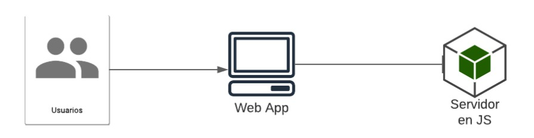

El curso de Organización de Lenguajes y Compiladores 1, ha puesto en marcha un nuevo proyecto, requerido por la Escuela de Ciencias y Sistemas de la Facultad de Ingeniería, que consiste en crear un lenguaje de programación para que los estudiantes, del curso de Introducción a la Programación y Computación 1, aprendan a programar y tener conocimiento de todas las generalidades de un lenguaje de programación. Cabe destacar, que este lenguaje será utilizado para generar sus primeras prácticas de laboratorio del curso antes mencionado.
Por lo tanto, a usted, que es estudiante del curso de Compiladores 1, se le encomienda realizar el proyecto llamado MFMScript, dado sus altos conocimientos en temas de análisis léxico, sintáctico y semántico.
Hoy en día, se ha dado gran importancia al uso de tecnologías de contenedores, lo que otorga como ventajas; rapidez en el despliegue y facilidad de mantenimiento en un servidor. Para el presente proyecto, se le propone manejar una arquitectura Cliente-Servidor, con el objetivo de que pueda separar los servicios administrados por el intérprete, de la aplicación cliente que se mostrará al usuario final.
